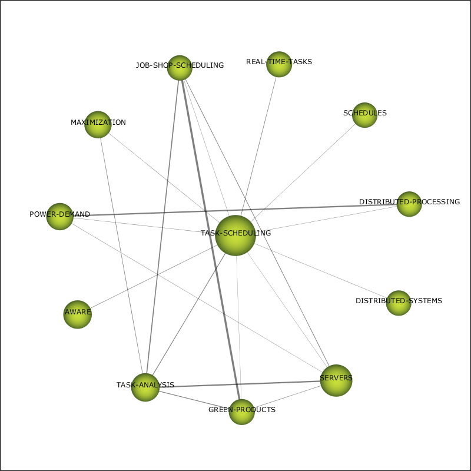
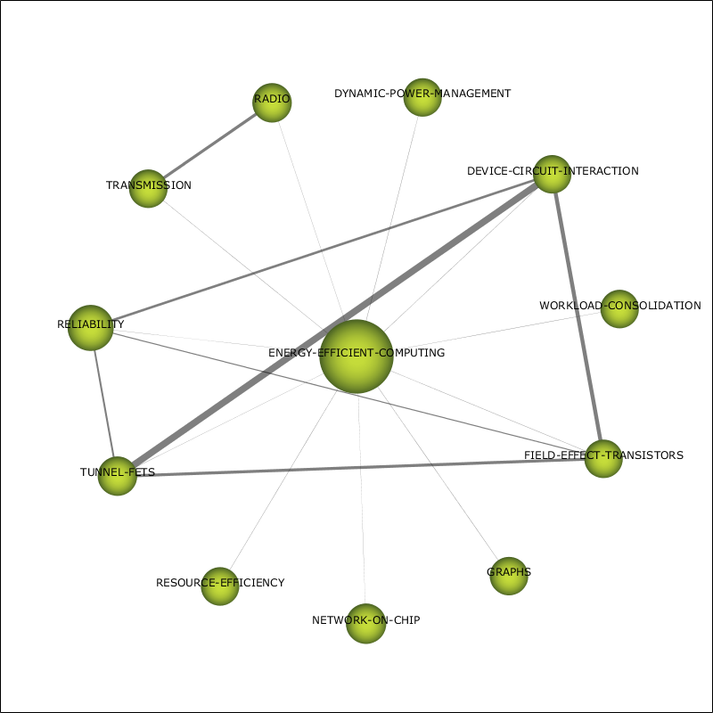
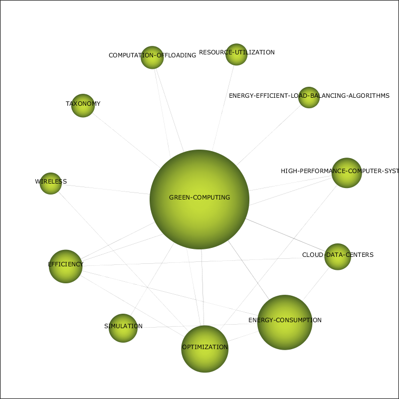
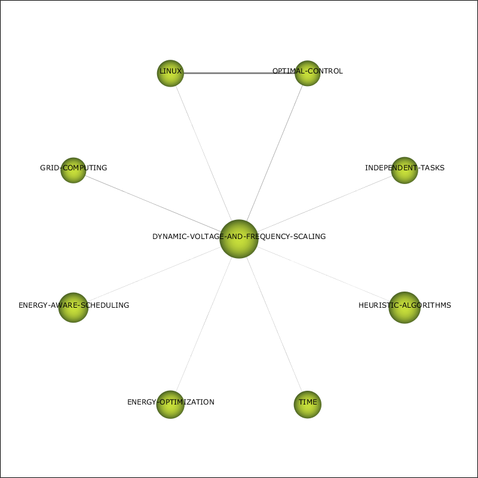
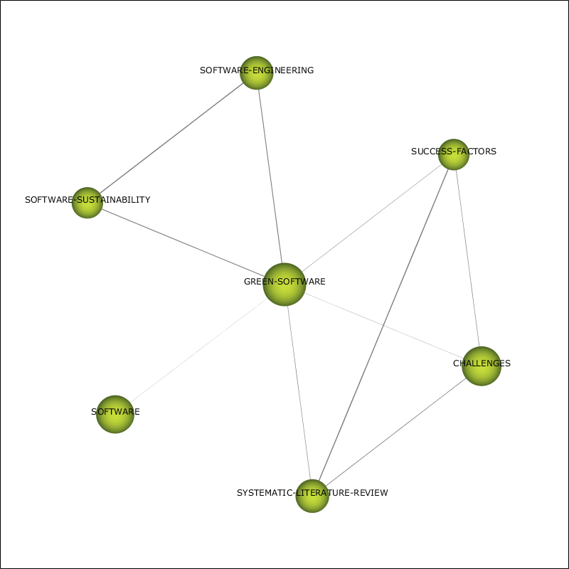
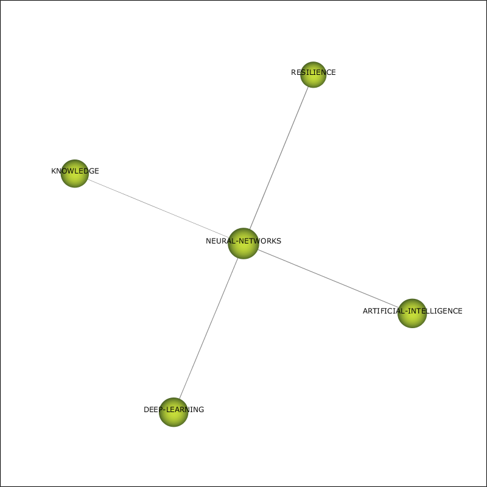
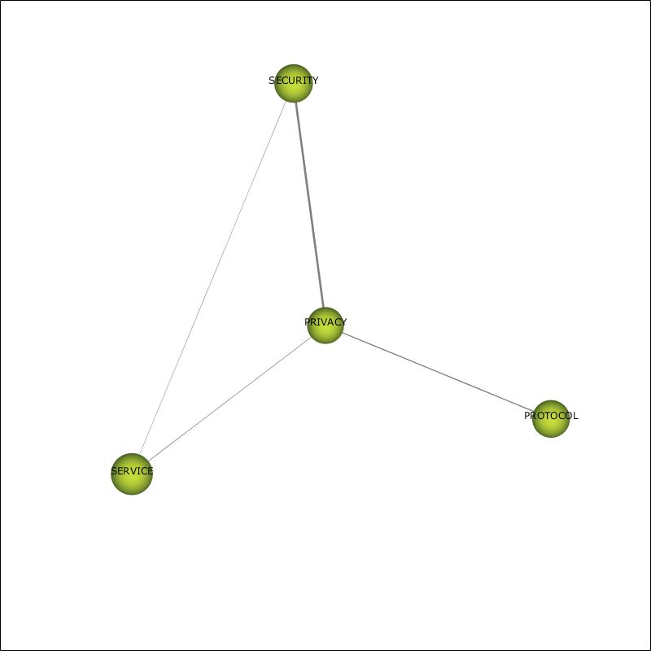
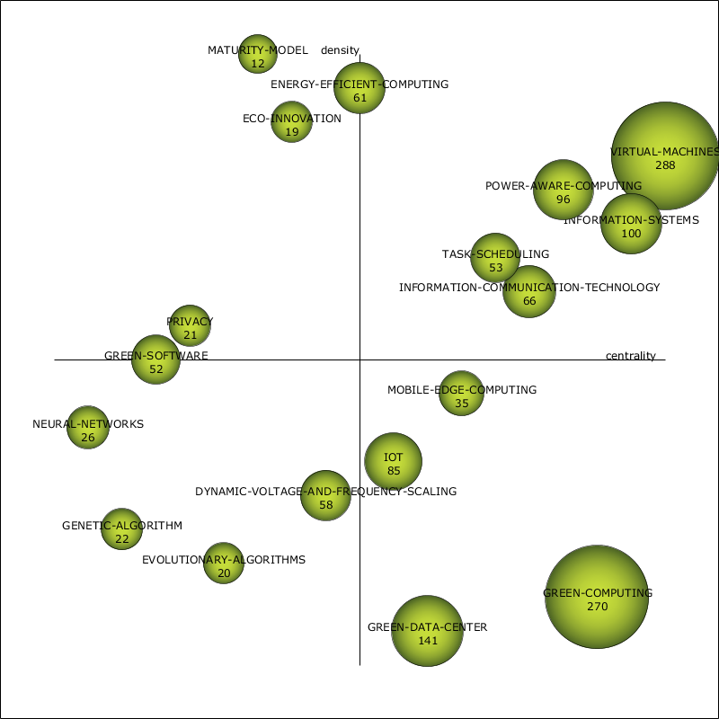
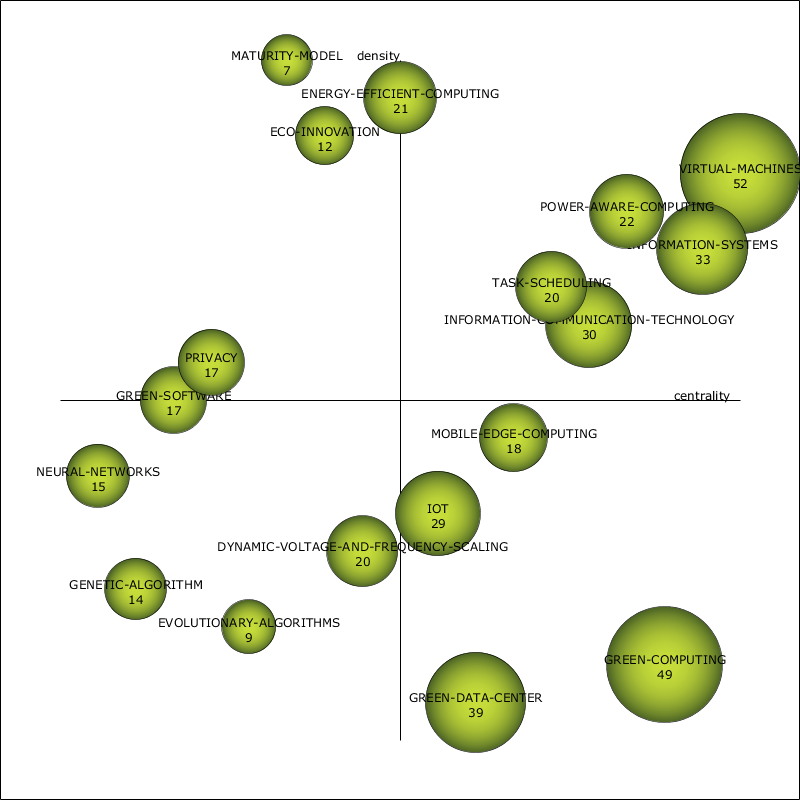
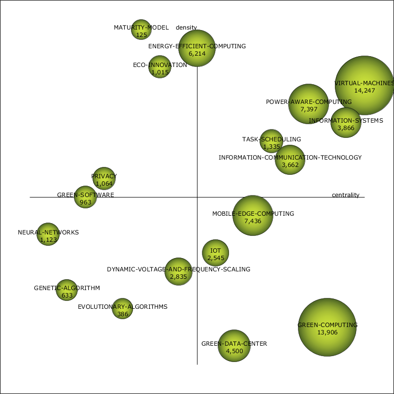

| Performance measure | Strategic diagram |
| unionDocuments-documentsCount |  |
| unionDocuments-hIndex |  |
| unionDocuments-sumCitations |  |
| Name | Centrality | Centrality range | Density | Density range |
| POWER-AWARE-COMPUTING | 39.26 | 0.83 | 18.35 | 0.78 |
| INFORMATION-SYSTEMS | 47.78 | 0.94 | 16.79 | 0.72 |
| VIRTUAL-MACHINES | 58.95 | 1 | 18.52 | 0.83 |
| TASK-SCHEDULING | 23.12 | 0.72 | 16.71 | 0.67 |
| ENERGY-EFFICIENT-COMPUTING | 17.31 | 0.5 | 23.13 | 0.94 |
| INFORMATION-COMMUNICATION-TECHNOLOGY | 29.09 | 0.78 | 13.26 | 0.61 |
| IOT | 19.06 | 0.56 | 6.68 | 0.33 |
| GREEN-COMPUTING | 44.44 | 0.89 | 3.04 | 0.11 |
| GREEN-DATA-CENTER | 19.65 | 0.61 | 2.32 | 0.06 |
| DYNAMIC-VOLTAGE-AND-FREQUENCY-SCALING | 14.95 | 0.44 | 5.84 | 0.28 |
| ECO-INNOVATION | 9.31 | 0.39 | 22.33 | 0.89 |
| GREEN-SOFTWARE | 4.08 | 0.17 | 11.78 | 0.5 |
| MOBILE-EDGE-COMPUTING | 21.15 | 0.67 | 9.09 | 0.44 |
| NEURAL-NETWORKS | 3.02 | 0.06 | 7.73 | 0.39 |
| MATURITY-MODEL | 7.15 | 0.33 | 41.31 | 1 |
| PRIVACY | 4.29 | 0.22 | 12.88 | 0.56 |
| EVOLUTIONARY-ALGORITHMS | 6.42 | 0.28 | 4.44 | 0.17 |
| GENETIC-ALGORITHM | 3.95 | 0.11 | 5.48 | 0.22 |
| Name | unionDocumentsdocumentsCount | unionDocumentshIndex | unionDocumentssumCitations |
| POWER-AWARE-COMPUTING | 96 | 22 | 7,397 |
| INFORMATION-SYSTEMS | 100 | 33 | 3,866 |
| VIRTUAL-MACHINES | 288 | 52 | 14,247 |
| TASK-SCHEDULING | 53 | 20 | 1,335 |
| ENERGY-EFFICIENT-COMPUTING | 61 | 21 | 6,214 |
| INFORMATION-COMMUNICATION-TECHNOLOGY | 66 | 30 | 3,662 |
| IOT | 85 | 29 | 2,545 |
| GREEN-COMPUTING | 270 | 49 | 13,906 |
| GREEN-DATA-CENTER | 141 | 39 | 4,500 |
| DYNAMIC-VOLTAGE-AND-FREQUENCY-SCALING | 58 | 20 | 2,835 |
| ECO-INNOVATION | 19 | 12 | 1,015 |
| GREEN-SOFTWARE | 52 | 17 | 963 |
| MOBILE-EDGE-COMPUTING | 35 | 18 | 7,436 |
| NEURAL-NETWORKS | 26 | 15 | 1,123 |
| MATURITY-MODEL | 12 | 7 | 125 |
| PRIVACY | 21 | 17 | 1,064 |
| EVOLUTIONARY-ALGORITHMS | 20 | 9 | 386 |
| GENETIC-ALGORITHM | 22 | 14 | 633 |
| Name | Cluster's network |
| POWER-AWARE-COMPUTING | |
| INFORMATION-SYSTEMS | |
| VIRTUAL-MACHINES | |
| TASK-SCHEDULING |  |
| ENERGY-EFFICIENT-COMPUTING |  |
| INFORMATION-COMMUNICATION-TECHNOLOGY | |
| IOT | |
| GREEN-COMPUTING |  |
| GREEN-DATA-CENTER | |
| DYNAMIC-VOLTAGE-AND-FREQUENCY-SCALING |  |
| ECO-INNOVATION | |
| GREEN-SOFTWARE |  |
| MOBILE-EDGE-COMPUTING | |
| NEURAL-NETWORKS |  |
| MATURITY-MODEL | |
| PRIVACY |  |
| EVOLUTIONARY-ALGORITHMS | |
| GENETIC-ALGORITHM | |